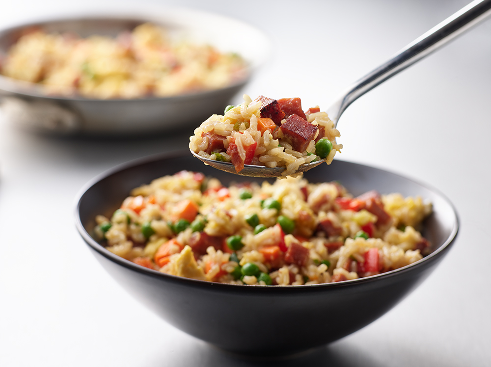

Spam Fried Rice

Description
Fried rice with eggs, diced vegetables and spam.
Ingredients
This recipe serves 4 people.
- 1 can of diced spam
- 2 tablespoons vegetable oil, divided
- 2 beaten eggs
- 1/4 cup diced carrots
- 1/4 cup chopped green onions
- 1/4 cup thawed frozen peas
- 1/4 cup chopped red bell pepper
- 2 cups cooked rice
- 3 tablespoons soy sauce
Steps
- In large skillet, heat 1 tablespoon oil.
- Add eggs. Cook, stirring to desired doneness. Remove from skillet and set aside.
- In same skillet, heat remaining 1 tablespoon oil. Cook spam, carrots, green onions, and bell pepper for 4 minutes or until vegetables are tender.
- Stir in rice and egg. Sprinkle with soy sauce. Heat thoroughly.
- Garnish as desired with additional green onion.
Home